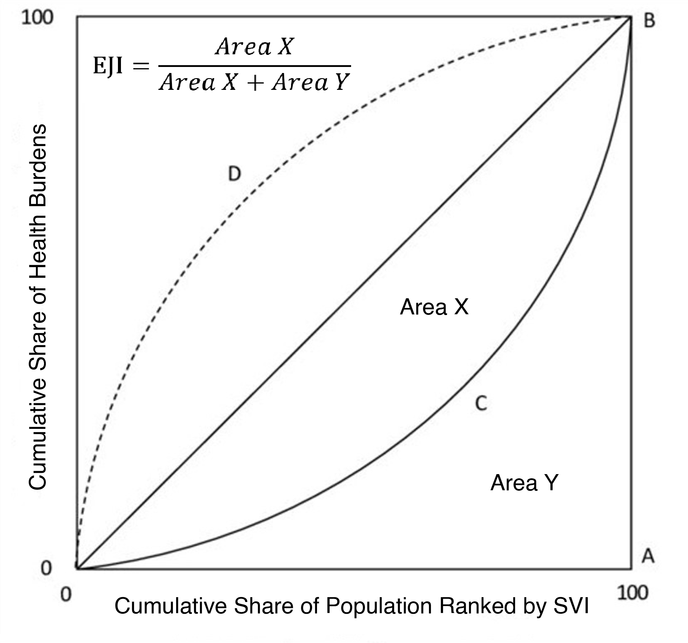

SCRAM - Size-Composition Resolved Aerosol Model
SCRAM (Size-Composition Resolved Aerosol Model) is a state-of-the-art atmospheric aerosol model developed to simulate the dynamics and composition of externally-mixed atmospheric aerosol particles. Unlike traditional models that assume all particles within a size range are internally mixed (uniform composition), SCRAM classifies aerosols by both chemical composition and particle size, allowing for a more realistic representation where particles of the same size can have different chemical compositions.
Key processes modeled by SCRAM include coagulation, condensation/evaporation, and nucleation. It can be run as a standalone box model or integrated into three-dimensional air quality models such as Polyphemus/Polair3D. SCRAM is written primarily in FORTRAN with some C++ components and is freely available under the GNU GPL license.
For more information, documentation, and source code, please visit: SCRAM Official Website
Reference: Zhu S., Sartelet K. N., and Seigneur C. A size-composition resolved aerosol model for simulating the dynamics of externally-mixed particles: SCRAM (v 1.0). Geoscientific Model Development, 2015, 8(6), 1595–1612. https://doi.org/10.5194/gmd-8-1595-2015
Environmental Justice Index
To evaluate the overall distribution of air pollution-associated health burdens across communities with different vulnerabilities, a Lorenz Curve-based method is applied to measure the distribution's inequality level, namely the Environmental Justice Index (EJI). Similar to the Gini factor used to measure income/distribution disparity, the Environmental Justice Index ranks the population accumulation curve based on the corresponding SVI value instead of the value of the target distribution.

The code used for the calculation of EJI in the paper "Improvements in U.S. Air Quality have not Addressed Pollution Inequalities - Especially among Minority and Elderly Populations" can be found here Python_Code_for_EJI. The code for mortatlity dataset preprocessing is here Python_Mortality_Preprocessing. For more technical details, please contact: sz@apep.uci.edu
The mortality datasets for code inputs can be accessed through the public link: https://doi.org/10.17605/OSF.IO/EZ5P2.